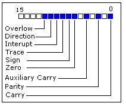

8086 assembler tutorial for beginners (part 6)
Arithmetic and Logic Instructions
Most Arithmetic and Logic Instructions affect the processor status register
(or Flags)

As you may see there are 16 bits in this register, each bit is called a flag
and can take a value of 1 or 0.
- Carry Flag (CF) - this flag is set to 1 when there is
an unsigned overflow.
For example when you add bytes 255 + 1 (result is not in range 0...255).
When there is no overflow this flag is set to 0.
- Zero Flag (ZF) - set to 1 when result is zero.
For none zero result this flag is set to 0.
- Sign Flag (SF) - set to 1 when result is negative.
When result is positive it is set to 0. Actually this flag
take the value of the most significant bit.
- Overflow Flag (OF) - set to 1 when there is a signed overflow.
For example, when you add bytes 100 + 50 (result is not in range -128...127).
- Parity Flag (PF) - this flag is set to 1 when there is even number
of one bits in result, and to 0 when there is odd
number of one bits. Even if result is a word only 8 low
bits are analyzed!
- Auxiliary Flag (AF) - set to 1 when there is an unsigned overflow
for low nibble (4 bits).
- Interrupt enable Flag (IF) - when this flag is set to 1 CPU reacts to
interrupts from external devices.
- Direction Flag (DF) - this flag is used by some instructions to process
data chains, when this flag is set to 0 - the processing is done forward,
when this flag is set to 1 the processing is done backward.
There are 3 groups of instructions.
First group: ADD, SUB,CMP, AND, TEST,
OR, XOR
These types of operands are supported:
REG, memory
memory, REG
REG, REG
memory, immediate
REG, immediate
REG: AX, BX, CX, DX, AH, AL, BL, BH, CH, CL, DH, DL, DI, SI, BP, SP.
memory: [BX], [BX+SI+7], variable, etc...
immediate: 5, -24, 3Fh, 10001101b, etc...
After operation between operands, result is always stored in first operand.
CMP and TEST instructions affect flags only and do not store a
result (these instruction are used to make decisions during program execution).
These instructions affect these flags only:
CF, ZF,
SF, OF, PF, AF.
- ADD - add second operand to first.
- SUB - Subtract second operand to first.
- CMP - Subtract second operand from first for flags only.
- AND - Logical AND between all bits of two operands. These rules
apply:
1 AND 1 = 1
1 AND 0 = 0
0 AND 1 = 0
0 AND 0 = 0
As you see we get 1 only when both bits are 1.
- TEST - The same as AND but for flags only.
- OR - Logical OR between all bits of two operands. These rules
apply:
1 OR 1 = 1
1 OR 0 = 1
0 OR 1 = 1
0 OR 0 = 0
As you see we get 1 every time when at least
one of the bits is 1.
- XOR - Logical XOR (exclusive OR) between all bits of two operands.
These rules apply:
1 XOR 1 = 0
1 XOR 0 = 1
0 XOR 1 = 1
0 XOR 0 = 0
As you see we get 1 every time when bits
are different from each other.
Second group: MUL, IMUL, DIV, IDIV
These types of operands are supported:
REG
memory
REG: AX, BX, CX, DX, AH, AL, BL, BH, CH, CL, DH, DL, DI, SI, BP, SP.
memory: [BX], [BX+SI+7], variable, etc...
MUL and IMUL instructions affect these flags only:
CF, OF
When result is over operand size these flags are set to 1, when result
fits in operand size these flags are set to 0.
For DIV and IDIV flags are undefined.
- MUL - Unsigned multiply:
when operand is a byte:
AX = AL * operand.
when operand is a word:
(DX AX) = AX * operand.
- IMUL - Signed multiply:
when operand is a byte:
AX = AL * operand.
when operand is a word:
(DX AX) = AX * operand.
- DIV - Unsigned divide:
when operand is a byte:
AL = AX / operand
AH = remainder (modulus).
.
when operand is a word:
AX = (DX AX) / operand
DX = remainder (modulus).
.
- IDIV - Signed divide:
when operand is a byte:
AL = AX / operand
AH = remainder (modulus).
.
when operand is a word:
AX = (DX AX) / operand
DX = remainder (modulus).
.
Third group: INC, DEC, NOT, NEG
These types of operands are supported:
REG
memory
REG: AX, BX, CX, DX, AH, AL, BL, BH, CH, CL, DH, DL, DI, SI, BP, SP.
memory: [BX], [BX+SI+7], variable, etc...
INC, DEC instructions affect these flags only:
ZF, SF, OF, PF, AF.
NOT instruction does not affect any flags!
NEG instruction affects these flags only:
CF, ZF, SF, OF, PF, AF.
- NOT - Reverse each bit of operand.
- NEG - Make operand negative (two's complement).
Actually it reverses each bit of operand and then
adds 1 to it. For example 5 will become -5, and -2 will
become 2.
<<< previous part <<<
>>> Next Part >>>